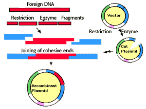

Recombinant DNA Technology Problem Set
Problem 2: Recombinant DNA 1
Tutorial to help answer the question
Which of the following tools of recombinant DNA technology is INCORRECTLY paired with its use?
A. restriction endonuclease - production of DNA fragments for gene cloning. B. DNA ligase - enzyme that cuts DNA, creating sticky ends. C. DNA polymerase - copies DNA sequences in the polymerase chain reaction. D. reverse transcriptase - production of cDNA from mRNA. E. electrophoresis - RLFP analysis.
Tutorial
Creating Recombinant DNA
A plasmid vector is digested with EcoRI at a single site to produce two sticky ends. A sample of human DNA is also digested with EcoRI to produce pieces with the same sticky ends. Human DNA- or cDNA copied from mRNA using reverse transcriptase from retroviruses. The two samples are mixed and allowed to hybridize, some molecules will form with pieces of human DNA inserted into the plasmid vector at the EcoRI site. DNA ligase is used to covalently link the fragments. 


University of Arizona
Updated: July 15, 1999
Contact the Development Team
http://biology.arizona.edu
All contents copyright © 1996-99. All rights reserved.